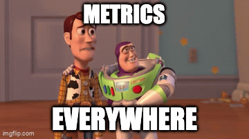

Share a way to have metrics around functions, operations, endpoints that are comparable over time. Considering our current "tool box".
Metrics help you track and visualize the data points you care about, making it easier to monitor your application health and identify issues.
Our working group has worked on some initiatives and some of them involve performance gains. We took this opportunity to implement these metrics with Sentry to make the adjustments more explicit and measurable.
Some examles that we can implement:
